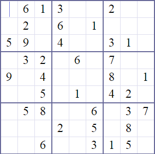

Ce este jocul Sudoku?
Sudoku, pronuntat [sudoku], din japoneza este un joc în forma de grila inventat în 1979 si inspirat de patratul latin si de problema celor 36 ofiteri a lui Leonhard Euler. Scopul jocului este de a umple aceasta grila cu cifrele de la 1 la 9 respectând anumite conditii, cu unele cifre fiind de la început dispuse în grila.
În ce constă principiul jocului Sudoku?
Este dat tabelul cu nouă coloane și nouă rânduri cu căteva numere de o cifră completate.
Care este scopul în jocul Sudoku?
Scopul vostru este ca în cel mai scurt timp posibil să completați tabelul Sudoku cu restul de cifre de la 1până la 9, așa încăt nici o cifră din nici o coloană, rând și în nici unul dintre cele nouă pătrate cu latura de 3 pătrățele să nu se repete.

Dificultatea jocului Sudoku
La prima vedere, soluțiile par simple, dar opusul este adevărat. Dificultatea jocului Sudoku nu este determinată doar de numărul de câmpuri ascunse, ci de interdependențele lor, care poate fi foarte complexă. Rezolvarea unor sudoku grele poate dura pentru un jucător cu experiență medie, aproximativ 15-60 de minute.
Rezolvare rapida - cautarea
Cautarea este prima metoda aplicata la începutul jocului, precum si periodic în timpul umplerii grilei. Mai multe cautari sunt adesea necesare între doua momente de analiza. Aceasta cautare face apel la doua tehnici simple: * Reducerea prin cruce: aceast înseamna, pentru fiecare cifra, eliminarea celulelor unde aceasta nu poate fi plasata. Pentru a determina aceste celule, jucatorul traseaza o linie imaginara pe fiecare linie si pe fiecare coloana unde cifra apare deja. Casutele care nu sunt traversate de nici o astfel de linie imaginara sunt acelea unde cifra poate fi inserata. Aceasta metoda poate fi folosita pentru completarea mai întâi a casutelor "celor mai usoare". Pentru a câstiga timp, jucatorul poate înceape prin cifrele cele mai numeroase printre casutele precompletate, dar este important ca metoda sa fie aplicata fiecarei cifre. Pentru a minimiza timpul de cautare în celelalte etape, aceasta cautare trebuie facuta sistematic, verificând toate cifrele. * Numaratoarea de la 1 la 9 pentru fiecare regiune, fiecare rând si fiecare coloana. Aceasta etapa permite gasirea cifrelor lipsa. (Facând-o în functie de ultima cifra gasita poate accelera cautarea.) În grilele dificile, cifra care trebuie înscrisa poate sa fie determinata facând o numaratoare inversa, adica încercând gasirea cifrelor care nu pot aparea în celula, ceea ce permite determinarea cifrelor candidate. Jucatorii experti cauta "contingentele" în timpul cautarii, adica încearca sa determine celulele candidat (doua sau trei) pentru o cifra anume. Când cifrele sunt toate în acelasi rând (sau coloana), si o regiune, ele sunt folosite în timpul reducerii prin cruce si a numaratorii (vedeti en exemplu). Grilele cele mai dificile cer recunoasterea contingentelor multiple, de multe ori în directii diferite sau la intersectii. Aceasta obliga jucatorii la înscrierea cifrelor candidate (metoda descrisa în continuare). Grilele care se pot rezolva prin reducerea prin cruce sunt considerate ca fiind usoare, cele mai dificile necesitând alte tehnici de rezolvare.
Rezolvare rapida - cifre candidate
Un exemplu a notatiei cu puncte Cifrele candidate pentru fiecare celula au fost înscrise. Anumite celule au numai câte o cifra candidat, dupa ce candidatele invalide au fost eliminate. (Apasati pe imagine pentru a vedea versiunea marita.) Cautarea se opreste atunci când nici o cifra noua nu mai este înscrisa. Din acest moment se foloseste o alta tehnica. Unora dintre jucatori li se pare mai usor sa înscrie cifrele candidate în celulele goale. Exista doua notatii folosite: indicele si punctele. * Pentru notatia cu indici, cifrele candidate sunt înscrise într-o celula, fiecare cifra putând ocupa sau nu un loc precis. Inconvenientul acestei metode este ca ziarele publica grile în general de o mai mica marime, ceea ce face relativ dificila înscrierea mai multor cifre într-o aceeasi celula. Mai multi jucatori reproduc la scara mai mare grilele sau recurg la un creion fin. * Pentru notatia cu puncte, jucatorii înscriu puncte în celulele goale. Pozitia relativa a unui punct indica cifra care lipseste. De exemplu, pentru a indica 1 într-o celula, se pune un punct în stânga sus. Aceasta notatie permite rezolvarea directa a unei grile imprimata dintr-un ziar. Cu toate acestea, ea necesita o anumita dexteritate, existând posibilitatea relativ usoara de a plasa gresit un punct într-un moment de neatentie, iar acest mic marcaj facut din greseala poate duce ulterior la confuzie. Unii jucatori prefera de aceea folosirea unui pix pentru a limita posibilitatea aparitiei greselilor.
Rezolvare rapida - analiza
Cele doua teme ale acestui procedeu sunt eliminarea si ipoteza. * Eliminarea: cautarea solutiei se poate face eliminând succesiv cifrele candidate pentru o casuta astfel încât sa nu se pastreze decât o singura cifra candidat. O data ce aceasta candidata a fost gasita, o alta cautare trebuie efectuata pentru a determina consecintele pe care aceasta alegere o are asupra celorlalte casute. Exista mai multe tehnici de eliminare care se bazeaza pe regulile de mai jos, reguli ce au niste corolaruri utile: 1. Un ansamblu dat de n casute într-un rînd, o coloana sau o regiune, nu poate sa primeasca decât n cifre diferite. Aceasta regula este la baza tehnicii de "eliminare a cifrei candidat orfane", discutata mai jos. 2. Fiecare candidata trebuie sa apartina unui model auto-consistent si independent. Aceasta regula sta la baza tehnicilor de analiza avansate, care cer inspectia ansamblului tuturor posibilitatilor pentru o cifra candidat. Exista un numar finit de "circuite închise" sau posibilitati de grile "n×n". Aceasta regula a dat nastere metodelor X-Wing, respectiv Swordfish, printre altele. Daca un astfel de model este identificat, atunci eliminarea cifrelor candidate este deseori posibila. * Una din tehnicile cele mai folosite este "eliminarea cifrei candidat orfane". Casutele cu un acelasi ansamblu de cifre candidat se zic cuplate daca numarul candidatelor din fiecare din ele este egal cu numarul de casutte care le pot contine. De exemplu, doua casute sunt cuplate daca contin o pereche unica de candidati (p,q) într-un rând, o coloana sau o regiune; trei casute se zic cuplate daca contin un triplet unic de cifre candidate (p,q,r). Aceste cifre nu pot aparea în alte parti, pentru ca ar exista un conflict într-o linie, o coloana sau o regiune. Pentru acest motiv, cifrele candidate (p,q,r) care se gasesc în celelalte celule trebuie eliminate. Acest principiu merge cu sub-ansambluri de cifre candidate: daca trei celule au doar { (p,q,r), (p,q), (q,r) }, sau { (p,r), (q,r), (p,q) }, toate cifrele candidate ale aceste multimi care se gasesc în celelalte casute trebuie eliminate. * Un al doilea principiu decurge din principiu precedent. Daca numarul celulelor într-un rând, o coloana sau o regiune este egal cu marimea unei multimi de cifre candidate, celulele si cifrele sunt cuplate si doar aceste cifre vor aparea în casute. Toate ceilalte cifre candidate trebuie eliminate. De exemplu, daca (p,q) poate aparea doar în doua casute (dintr-un rând, coloana sau regiune), ceilalte cifre candidate trebuie eliminate. Primul principiu se bazeaza pe conceptul de "cifre cuplate unic", pe când al doilea se bazeaza pe conceptul de "casute cuplate unic". Tehnicile avansate se bazeaza pe aceste concepte si cuprind rânduri multiple, coloane multiple si regiuni multiple. * Folosind metoda ipotezei, o casuta cu doar doua cifre candidat este aleasa si una din cele doua cifre este înscrisa în celula. Etapele precedente sunt repetate si fie duc la o contradictie (cifra duplicata sau casuta fara candidat), fie la o propunere valida. Evident, în cazul unei contradictii, a doua cifra face parte din solutie. Algoritmul lui Nishio este o forma simplificata a acestei metode: pentru fiecare cifra candidat dintr-o casuta, inserarea unei cifre anume previne înscrierea acestei cifre candidat în alta parte în grila? Daca raspunsul este da, atunci cifra candidata este eliminata. Metoda prin ipoteza necesita folosirea unui creion si a unei gume de sters. Puristii o resping, pentru ca este o metoda de încercari si esecuri, prin tatonari, pe când majoritatea grilelor publicate fac apel doar la logica pentru a fi rezolvate. Cu toate acestea, aceasta metoda are meritul de a duce mai rapid la solutie. Ramâne la latitudinea fiecarui jucator gasirea unei metode care sa îi ofere cele mai bune rezultate. Unii vor dezvolta o metoda care sa reduca inconvenientele propunelor precedente. De exemplu, unii vor gasi plictisitor înscrierea tuturor cifrelor candidat în toate casutele. Metoda ipotezei cere organizare. Ideal este gasirea unei modalitati de rezolvare care sa minimizeaze numararea, numarul cifrelor candidat si numarul de ipoteze.